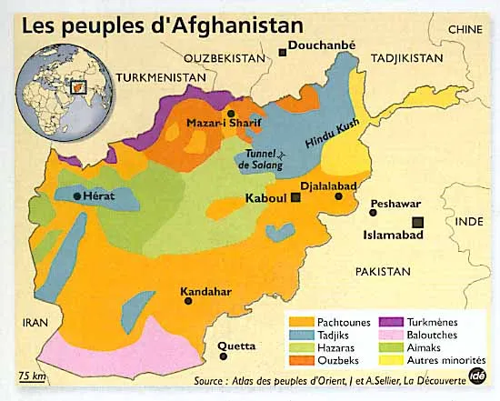

Le début d'un conflit marquant
La guerre de l'afghanistan débuta le 11 septembre 2001 lorsque des terroristes d'Al-Qaida attaquèrenet les États-unis. Ayant initialement eu lieu aux États-unis ainsi qu'en Afghanistan, dans lequel le gouvernement taliban protégeait le groupe terroriste, d'autres pays ont également pris leur place au sein de cette guerre. En effet, le Canada a accepté d'envoyer des forces militaires en afghanistan en décembre 2001 ainsi qu'une unité navale afin de surveiller la mer d'Oman et la région contenant des activités terroristes. Le but principal étant de protéger l'aérodrome de Kandaha. En 2003, le Canada se joint à la Force internationale d’assistance à la sécurité dirigée par l’Organisation du traité de l’Atlantique Nord (OTAN) à la capitale de l'afghanistan, Kaboul. La troupe militaire retourna à Kandahar en 2005 dans le but de reconstruire la province. Cependant, cette mission s'élargissa afin d'inclure un groupement tactique. En 2008, l'armée canadienne combata aux côtés des partenaires de l'OTAN ainsi que des afghans afin de reprendre les zones occupées par les talibans. Ce combat dura six ans. En 2011, le Canada mis fin à sa mission de combat à Kandahar et poursuiva la formation de forces de sécurité nationales afghan à Kaboul Mazar-e-Sharif. Les forces canadiennes quittèrent l'Afghanistan en 2014, ce qui mets également fin à leur participation à la guerre. Le conflit eu alors fin en mars 2014.
Les causes du conflit
Le 11 septembre 2001, quatre avions ont été envoyés par des forces terroristes dans des attentats suicidaires, faisant 2976 morts ainsi que l'effondrement des tours jumelles du World Trade Center. Les États-Unis ont alors établis des politiques de sécurité internationale contre le terrorisme depuis ces attaques. Une guerre entre Al-Qaida et le jihad est alors déclarée en réponse des États-Unis suite à l'événement du 11 septembre 2001. La guerre de l'Afghanistan n'est qu'une conséquence de la guerre contre le terrorisme envisagée par les États-Unis puisque les talibans, qui dirigeaient l'État de l'afghanistan s'entendaient avec les dirigeant d'Al-Qaida.
L’arrivée des américains en force
Le 7 octobre 2001, le président des États-Unis, George W. Bush envoie ses forces militaires en Afghanistan suite au refus des talibans de livrer Oussama Ben Laden, le chef d’Al-Qaïda. Cette offensive militaire nommée « Liberté immuable » dirigée par les forces britanniques et américaines commence par une série de bombardements aériens et de tirs de missiles de croisière. Il y eut plusieurs autres opérations militaires comme les raids sur Rhino et Gecko (impliquant les forces terrestres), une offensive lancée sur Mazar-e-Charif ainsi que la bataille de Kandahar. Suite à ces interventions, les talibans remettent la ville dans les mains du futur président Hamid Karzai ainsi que Sharzaï. Les combats de la guerre de 2001 finissent avec la bataille de Tora Bora jusqu’au 17 décembre. Cette intervention était justifiée selon les forces américaines puisque les talibans ne voulaient pas leur livrer Oussama Ben Laden, qui était une grande menace terroriste à ces 50 états.
La paix en ruine
À la capitale de l’Afghanistan, Kaboul, les bombardements s’enchaînent les uns après les autres. On y compte des dizaines de milliers de morts. Les talibans commencent à installer un climat de peur et terrorisent la population. À l’arrivée des forces américaines, on nomme cette guerre « Guerre contre le terrorisme ». À Hérat, il y eut un soulèvement contre les talibans que l’on reconnaît sous le nom de « L’insurrection de la ville de Hérat ». Il y eut d'innombrables autres combats à Kunduz, Qala-e-Jangi, Kandahar, Tora Bora, Mazar-e-Charif, etc. En effet, ce conflit se situe dans une des principales zones de tension au monde.
Sources
Musée canadien de la guerre, https://www.museedelaguerre.ca/apprendre/le-canada-et-la-guerre-en-afghanistan/ .
Guerre en Afghanistan : retour sur 20 ans d'intervention américaine, https://www.la-croix.com/Actualite/Monde/Chronologie-des-evenements-en-Afghanistan-depuis-2001-_NG_-2011-06-23-666933/ .
Guerre d'Afghanistan (2001-2021) — Wikipédia, https://fr.wikipedia.org/wiki/Guerre_d'Afghanistan_(2001-2021)/ .
Afghanistan: l'intervention militaire américaine depuis 2001 | JDM, https://www.journaldemontreal.com/2017/08/21/afghanistan-lintervention-militaire-americaine-depuis-2001/ .
La Guerre d'Afghanistan (2001-2014) – Des guerres américaines : facteurs de l'évolution des prothèses, https://prothesesguerresagirpoursonavenir.wordpress.com/2018/01/27/la-guerre-dafghanistan/ .
Les tensions et les conflits | Alloprof, https://www.alloprof.qc.ca/fr/eleves/bv/monde-contemporain/les-tensions-et-les-conflits-0-h1949/ .